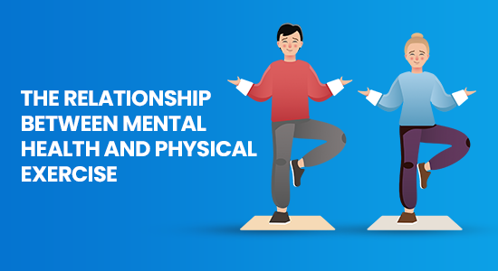
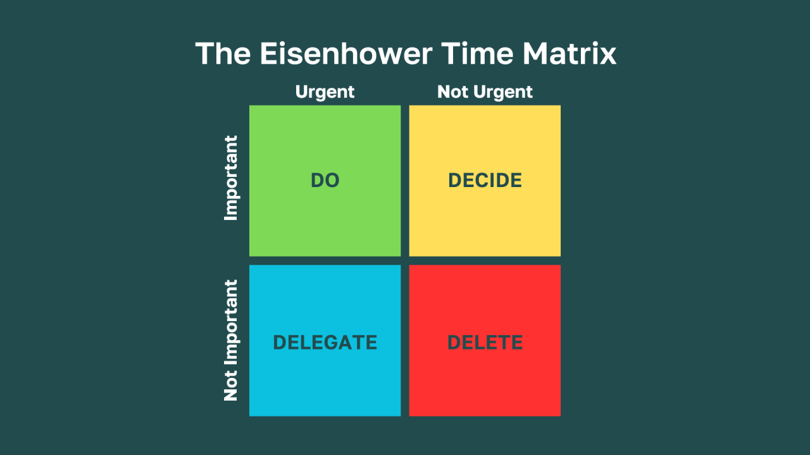
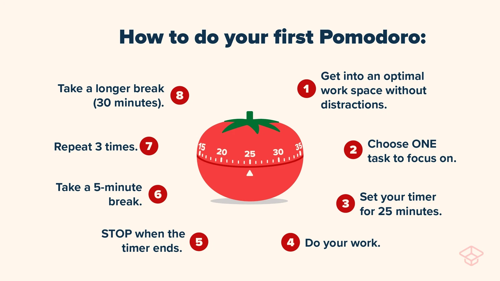

Student Well-Being
Mental health is just as important as physical health. Learn to recognize signs of stress, anxiety, and burnout, and discover effective strategies to maintain your mental well-being.
Mental health encompasses our emotional, psychological, and social well-being. It affects how we think, feel, and act, especially during the challenging teenage years. In high-pressure academic environments common in India and China, students often face unique mental health challenges including performance anxiety, peer pressure, and perfectionism.
Cultural perceptions about mental health can make it difficult for some students to acknowledge struggles or seek help. There's often a stigma attached to mental health issues, with many viewing them as signs of weakness rather than legitimate health concerns. However, it's important to understand that mental health challenges are common and treatable.
Just as we take care of our physical health, we need to attend to our mental wellbeing through practices like mindfulness, adequate rest, and social connection. Research shows that students with good mental health practices not only perform better academically but also develop stronger resilience skills that benefit them throughout life. Remember that seeking help for mental health concerns is a sign of strength, not weakness.
Regular mindfulness meditation can actually change your brain structure, increasing the density of gray matter in regions associated with learning, memory, and emotion regulation.

Studies show that having just one supportive relationship can significantly reduce depression and anxiety symptoms. Reach out to someone you trust when feeling overwhelmed.
Learn about the importance of mental health in your academic journey
and everyday life
Accessed from Rijksdienst voor Ondernemend Nederland
Stress is an inevitable part of student life, but how we manage it makes all the difference. Effective stress management not only improves academic performance but also enhances overall wellbeing. The following strategies can help you navigate common challenges and build resilience for long-term success.
High expectations from parents, teachers, or yourself can create overwhelming pressure. Remember that grades don't define your worth or potential for success in life.
Did you know? Taking short breaks every 25-30 minutes can improve focus and retention.
Feeling nervous in social situations is common, especially during teenage years when social acceptance feels particularly important.
Did you know? Social anxiety affects about 15% of teenagers, so you're not alone.
Mindfulness helps you stay present rather than worrying about the past or future. These simple practices can be incorporated into your daily routine.
Did you know? Regular mindfulness practice can actually change brain structure, improving memory and emotional regulation.
Click on each element to learn more about these evidence-based techniques:
Even a 10-minute walk can significantly reduce anxiety. Exercise releases endorphins, your body's natural mood elevators, and provides a mental break from stressors.
Feeling overwhelmed by your to-do list? Use the Eisenhower Matrix to sort tasks by urgency and importance. Focus on the important-urgent quadrant first, schedule important-not urgent tasks, and consider delegating or eliminating the rest.
The Pomodoro Technique: 25 minutes of focused work followed by a 5-minute break helps maintain mental energy. After four cycles, take a longer 15-30 minute break. This prevents mental fatigue and improves productivity.
